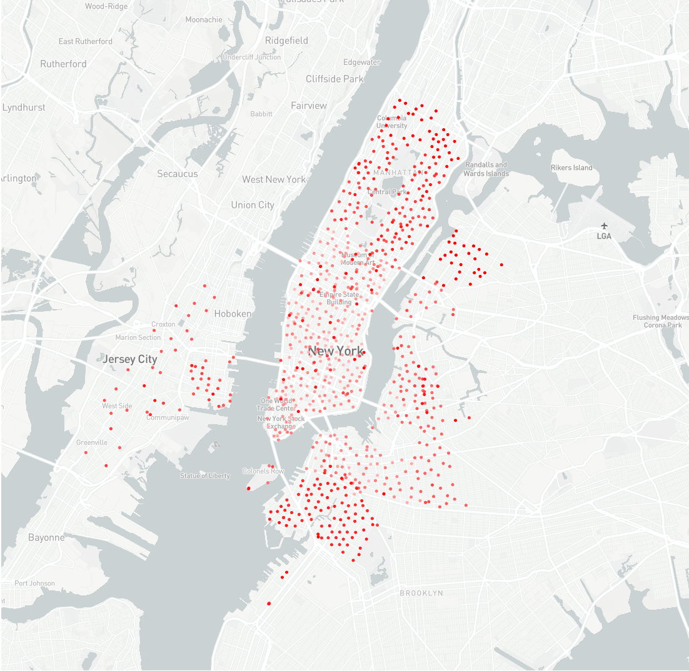

Experiments on Charge-Station demand station¶
Experiment Setting
Dataset
| Attributes | **Beijing** |
| :----------------------: | :---------: |
| Time span | |
| Number of riding records | |
| Number of stations | 629 |
Following shows a map-visualization of bike stations in NYC, the latest built stations have deeper color.
In the data preprocessing stage, we removed the stations with average daily traffic flow smaller than 1, since predictions for these stations are not significant in real life. The remaining station number are 717, 444 and 378 for NYC, Chicago and DC, respectively.
Network parameter setting (STMeta model)
Following shows the parameters we used and a short explanation of the parameter meaning. To know more about the parameter, please refer to the API reference.
| Parameter | Value | Meaning |
| :--------: | :---: | :----------------------------------------: |
| GLL | 1 | number of GCLSTM layers |
| LSTMUnits | 64 | number of hidden units in LSTM |
| GALUnits | 64 | number of units used in GAtteL |
| GALHeads | 2 | number of multi-head in GAtteL |
| DenseUnits | 32 | number of units in penultimate dense layer |
| TC | 0 | correlation threshold |
| TD | 1000 | distance threshold |
| TI | 500 | interaction threshold |
Experiment Results
CG-GCLSTM Only use correlation graph in the model
DG-GCLSTM Only use distance graph in the model
IG-GCLSTM Only use interaction graph in the model
| Beijing | |
|---|---|
| HM | 1.13594 |
| ARIMA | 5.60477 |
| HMM | 5.42030 |
| XGBoost | 5.32069 |
| LSTM | 5.13307 |
| CG-GCLSTM | 4.64375 |
| DG-GCLSTM | 4.67169 |
| IG-GCLSTM | 4.77809 |
| ST_MGCN (Multi-Graph) | 4.41732 |
| STMeta | 4.22640 |
Add trend and period into feature:
(C6-P7-T4) means the length of closeness, period and trend are 6, 7, and 4 respective.
Default C6-P7-T4
| NYC | Chicago | DC | |
|---|---|---|---|
| HM (C6-P7-T4) | 4.55474 | 3.28585 | 2.74502 |
| HM (C0-P7-T4) | 4.27844 | 3.18290 | 2.68013 |
| XGBoost | 4.14909 | 3.02530 | 2.73286 |
| GBRT | 3.94348 | 2.85847 | 2.63935 |
| LSTM | 3.92746 | 2.92663 | 2.65197 |
| DG-GCLSTM | 3.88572 | 3.00055 | 2.60095 |
| IG-GCLSTM | 3.79187 | 2.97707 | 2.58739 |
| CG-GCLSTM | 3.77422 | 2.98797 | 2.59339 |
| STMeta | 3.73464 | 2.79475 | 2.47565 |
Model training records
Following data was collected on a Windows PC with CPU : Interl i7 8700K, Memory: 32 GB, GPU: Nvidia GTX 1080Ti.
NYC City |
SingleGraph-GCLSTM(Average) | STMeta | ST_MGCN |
|---|---|---|---|
| Number of trainable variables | 19749 | 61993 | 249245 |
| Converaged training time | 2 hours | 6 hours | 51 hours |
Source Code
Use the ./Experiment/STMeta_Master_Bike.py to train the model or view evaluation results.